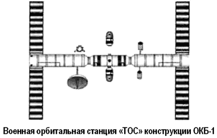
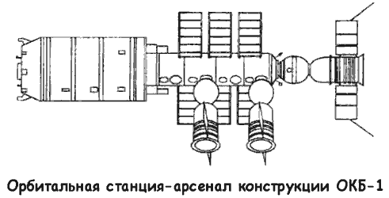
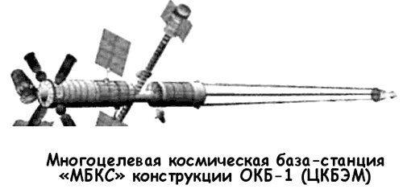

«ТОС» Сергея Королева
Создание долговременных орбитальных станций в Советском Союзе преследовало далеко идущую цель. Для того чтобы понять, какое значение придавал орбитальным станциям Сергей Королев, откроем его рабочие «Заметки по тяжелому межпланетному кораблю (ТМК) и тяжелой орбитальной станции (ТОС)», датированные 14 сентября 1962 года «…Надо бы начать разработку «Оранжереи (ОР) по Циолковскому», с наращиваемыми постепенно звеньями или блоками и надо начинать работать над «космическими урожаями». Каков состав этих посевов, какие культуры? Их эффективность, полезность? Обратимость (повторяемость) посевов из своих же семян, из расчета длительного существования ОР. Какие организации будут вести эти работы: по линии растениеводства (и вопросов почвы, влаги и т. д.), по линии механизации и «свето-тепло-солнечной» техники и систем ее регулирования для ОР и т. д.?
Видимо, к ОР надо одновременно начать разработку и «космической фермы» (КФ) для животных и птицы. Надо бы эту задачу уточнить — имеет ли она практический смысл для экологического цикла (институты Академии наук и Академии медицинских наук). […] Надо решить проблему «постоянных спутников» или «орбитального пояса» для нанесения ряда функций в течение очень длительного времени.
Как их (эти спутники) ремонтировать, регулировать, перезаряжать и т. д.? Нужна целая система или служба около Земли.
Очевидно, что в «орбитальном поясе» следует расположить и «запасные базы-спутники» для кораблей, которым это будет вдруг нужно! По типу туристских запасных баз, со всем необходимым для крайнего случая (воздух, влага и питание, энергетика запасная, связь, медикаменты, аппаратура для создания искусственной тяжести и др.). Но, возможно, следует создать вечный спутник Луны для этих целей, а на Луне — основную базу. Создание вечного (и достаточно крупного) станции-спутника Луны выгодно тем, что пролетающим кораблям не надо будет садиться на Луну, либо опускать на ее поверхность ракетные (планетные) зонды, что связано со значительными затратами топлива и другими трудностями. Видимо, к станции-спутнику Луны можно будет «причалить» с минимальными затратами энергии (это надо тщательно проверить и сравнить с посадкой на Луну и с возвратом на орбиту с поверхности Луны). […]
Вопросы, связанные с невесомостью, — основные! Видимо, здесь опыты на «Союзе» и на ТОС дадут возможность получить большие и очень большие длительности (до 1 года) пребывания в условиях невесомости (что при 1 годе решает проблему полета к ближним планетам, так как сроки 3–5 лет будут уже примерно того же порядка).
В условиях длительного космического полета можно будет основательно проверить: влияние невесомости на разных людях и на достаточно большом числе людей, разные медикобиологические средства, равные механические средства временного и постоянного искусственного тяготения. Можно будет впервые развернуть в космическом пространстве настоящие медико-биологические исследования и наблюдения в действительных условиях. Тут же будет проверяться и вся вообще техника для более длительных полетов.
Видимо, создание ТОС есть необходимый этап для длительных полетов в космическом пространстве, так как здесь будет отрабатываться у Земли вся техника.
Это важный методический шаг, без которого не пройти.
Ему предшествовать должна тщательная и длительная подготовка на Земле, в земных условиях людей и техники, хотя эта будет во многих случаях и не совсем то, что нужно…»
Итак, основной задачей тяжелый орбитальных станций Королев считал подготовку к будущим межпланетным экспедициям.
Однако Генеральный конструктор был умным человеком и прекрасно понимал, в каком мире живет, поэтому, когда приходилось обсуждать тему орбитальных станций с руководством страны, во главу угла ставилась возможность их военного применения.
Так, один из первых проектов орбитальной станции, описанный Королевым в письме министру обороны от 23 июня 1960 года, был именно военным. Маневрирующая станция массой от 25 до 30 тонн (в другой версии — от 60 до 70 тонн!), имея на борту экипаж от трех до пяти человек, могла бы выполнять следующие задачи: разведка, боевые действия против вражеских кораблей, уничтожение баллистических ракет противника, астрономические, метеорологические и геофизические наблюдения, изучение солнца и радиационных поясов, биологические эксперименты.

Достаточно проработанный эскизный проект долговременной орбитальной станции военного назначения, известной как «ТОС» (или «ТКС»), был подготовлен конструкторами ОКБ-1 в мае 1961 года. Эта станция на экипаж из трех человек должна была иметь следующие габариты: полная длина — 52 метра, максимальный диаметр — 4,2 метра, полная масса — 150 тонн. В качестве источников электропитания планировалось использовать солнечные батареи и компактный ядерный реактор.
Станция состояла из трех цилиндрических герметизированных модулей. Два из них (длиной по 20 метров) вмещали жилые помещения. Центральный модуль (длиной 12 метров) соединял два жилых и имел четыре стыковочных узла в своем среднем отсеке. Дополнительные люки внутри модулей позволяли разделить станцию на пять герметичных частей в случае критической ситуации.
Согласно плану основной модуль станции должен был выводиться на орбиту одной из первых ракет «Н-1» — ориентировочно этот запуск назначили на 1965 год. Доставка жилых модулей требовала еще двух ракет «Н-1».
Смена экипажей происходила бы ежемесячно. Транспортный корабль снабжения, походивший по устройству основных узлов на более поздний «Союз», должен был доставлять на станцию продовольствие, воду, сменные элементы системы регенерации, топливо для двигателей ориентации.
Предполагалось, что станцию приведут во вращение для создания искусственной силы тяжести внутри отсеков.
В ходе встречи главных конструкторов с Никитой Хрущевым, состоявшейся 25 сентября 1962 года в Пицунде, Королев получил задание разработать эскизный проект пилотируемой орбитальной станции весом в 75 тонн, снабженной арсеналом ядерного оружия.
В ходе работ прояснились некоторые детали. Станция получилась сравнительно большой: длина — 25 метров, максимальный диаметр — 6 метров, обитаемый объем — 510 м?.
Экипаж — 6 человек. Электроснабжение обеспечивают шесть панелей солнечных батарей площадью 110 м?.
К 1965 году эскизы и макет такой станции было закончено, однако конъюнктура изменилась и программа поменяла назначение — теперь в ОКБ-1 разрабатывали «МКБС» («Многоцелевая космическая база-станция»).
Василий Мишин, заняв место Королева, поручил руководство этой работой проектанту-баллистику Виталию Безвербому.
«МКБС» должна была служить космическим портом, в который заходили бы другие космические аппараты, главным образом разведчики, для сдачи своих фотоматериалов, перезарядки, заправки топливом, профилактики и ремонта. Такое сервисное обслуживание должно было проводиться на «МКБС» хорошо подготовленным экипажем.
Наличие на околоземной орбите подобной базы-станции позволило бы продлить работоспособность космических аппаратов, которые в настоящее время после израсходования своих запасов или при отказах вынуждены спускаться на Землю.

Габариты станции: полная длина — 100 метров, базовый диаметр — 6 метров, полная масса — 250 тонн.
Согласно эскизному проекту «МКБС» состоял из двух больших основных модулей массой от 80 до 88 тон каждый, запускаемых на орбиту ракетой «Н-1». Электропитание осуществлялось ядерной установкой мощностью 200 кВт; еще 14 кВт резервной мощности давали солнечные батареи площадью 140 м?. Два малых служебных модуля, вынесенные на кронштейнах, с помощью своих двигателей обеспечивали вращение станции вдоль продольной оси.
Для обеспечения устойчивой работы солнечных панелей должен быть помещен на солнечно-синхронную орбиту высотой от 400 до 450 километров с наклонением 97,5.
Основной экипаж состоял из шести космонавтов (при максимуме — в десять) и сменялся бы раз в два или три месяца.
Полное время эксплуатации «МКБС» — 10 лет.
Станцию предполагалось оборудовать двигательной установкой, состоящей из двигателей орбитальной коррекции (тяга — от 300 до 1000 килограммов), двигателей грубой ориентации (тяга — от 10 до 40 килограммов) и ионных двигателей точной ориентации (тяга — от 100 до 300 граммов).
«МКБС» собирались оснастить различными видами противоракетного и противокосмического оружия, в том числе и лучевого. По этому поводу академик Герш Будкер из Новосибирска прочел лекцию конструкторам ОКБ-1 на тему о возможности создания ускорителей для лучевого оружия из нейтральных частиц. В бюро нашлись энтузиасты, которые незамедлительно начали изучать эту проблему.

И по другим направлениям разработки элементов орбитальной станции конструкторам бюро удалось продвинуться далеко вперед. Этому способствовали полеты орбитальных модификаций кораблей «7К-ОК» («Союз»). С помощью двух кораблей «Союз» на орбите была создана экспериментальная космическая станция.